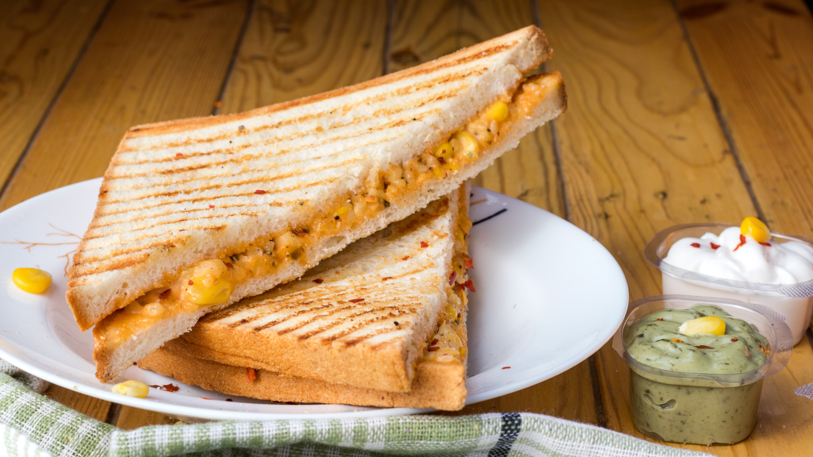

!DOCTYPE html>
my resipe book|meals|Grilled Cheese

Grilledcheese sandwich
prep time:10 mins
yield:4
ingredients
steps
stir together butter and parmeson cheese in a small bownl
spread 1 1/2 tsp. butter mixture on 1 side of each bread slice.place 4 bread slices,buttered sides down,on wax paper.
Top with provolone and mozzarella cheeses,top with remaining bread slices,butterd sides up.
cook sandwich,in batches.on a hot griddle or in a non-stick over medium heat,gently pressing with a spatula,
4 minutes on each side or until golden brown and cheese is melted